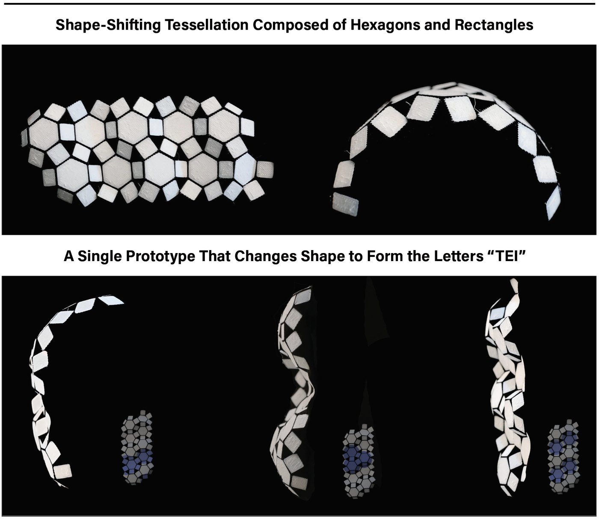
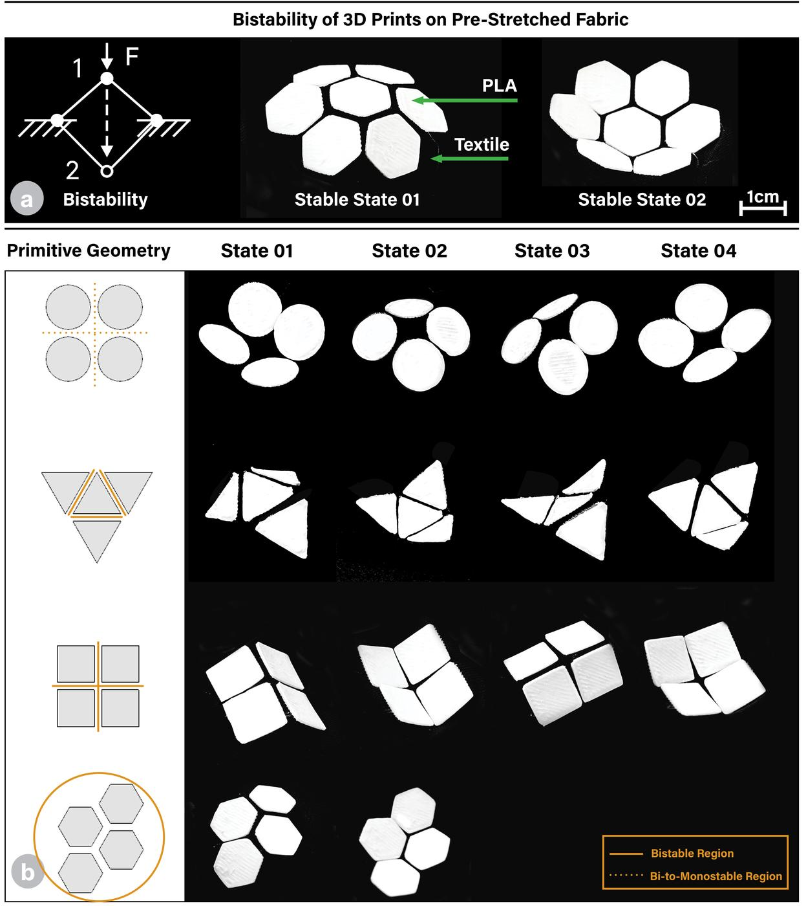

PixBric
TEI '26 · Self-shaping textiles · MIT Media Lab

PixBric: Precision Morphological Control of Pre-Stretched Fabrics Through Tessellated Primitive Geometries
3D printing onto pre-stretched fabrics has emerged as a promising technique for fabricating self-shaping textiles. However, resulting morphing behaviors are often dictated by heuristics or arbitrarily selected parameters. We present PixBric, a pixel-based design framework that enables precise morphological control through tessellated primitive geometries printed onto biaxially stretched fabrics.
Upon release, these units buckle into programmed 3D forms including undulations, curling, and bistable snapping. PixBric integrates parametric modeling, mechanical simulation, and empirical evaluation to map geometric parameters to deformation outcomes.
Applications
- Morphable typography
- Wearable rings
- Reconfigurable surfaces

Morphable typography using tessellated primitives

Bistable pixel geometries on pre-stretched fabric
Authors
Hye Jun Youn, Jun Kyu Choe, SooYeon Ahn, Marcello Tania, Serena Xin Wei Sara, Hiroshi Ishii
Publication
Proceedings of the Twentieth International Conference on Tangible, Embedded, and Embodied Interaction (TEI '26), Chicago, IL, USA. Association for Computing Machinery, Article 20, pp. 1–15.
License
Creative Commons Attribution (CC BY).